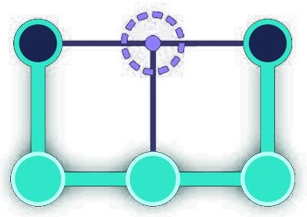
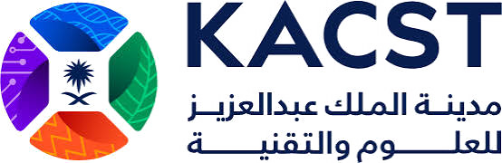
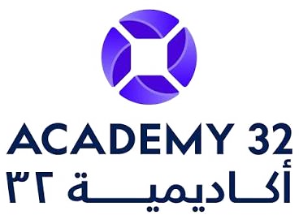
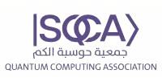
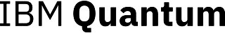
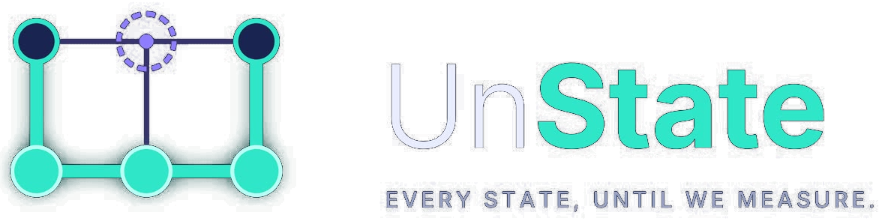
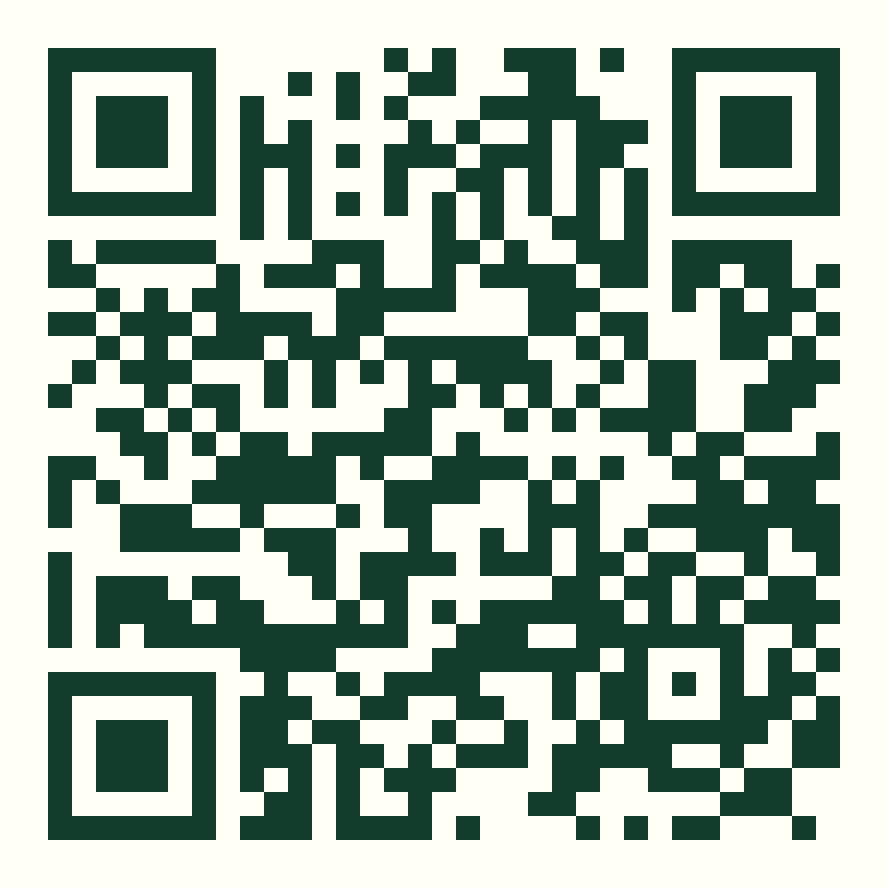

ما المشكلة ومن يواجهها؟
مشغّلو شبكات النقل والكهرباء يحتاجون لمراقبة خطوط النقل عبر حساسات في محطات التحويل. لأن الحساسات مكلفة، نريد اختيار أقل عدد من المحطات بحيث يلمس كل خط محطة واحدة على الأقل (مسألة الغطاء الرأسي الأصغر، Minimum Vertex Cover).

UnState



عرض تفاعلي مبسّط يشرح المسألة، لماذا تكبر صعوبتها مع التوسع، كيف تعمل خوارزمية QAOA، وما الذي يثبته هذا النموذج المصغّر بوضوح.
6 محطات · 7 خطوط. اضغط على أي محطة (0 إلى 5) لوضع أو إزالة حساس. الخط المتصل بمحطة عليها حساس يُعد مراقَبًا.
النتائج من محاكاة مثالية خالية من الضوضاء على 6 كيوبتات (أفضل من 6 محاولات بدء لـ COBYLA).
مشغّلو شبكات النقل والكهرباء يحتاجون لمراقبة خطوط النقل عبر حساسات في محطات التحويل. لأن الحساسات مكلفة، نريد اختيار أقل عدد من المحطات بحيث يلمس كل خط محطة واحدة على الأقل (مسألة الغطاء الرأسي الأصغر، Minimum Vertex Cover).
6 محطات تعني 64 احتمالًا فقط (2 أس 6)؛ بينما 1,000 محطة تعني عددًا هائلًا من الاحتمالات (2 أس 1000). الطرق الكلاسيكية الذكية قوية اليوم، والسؤال الحقيقي هو أين تتوقف قابليتها للتوسع مع تعقيد الشبكات.
نحوّل التكلفة إلى طور (Phase) عبر طبقة التكلفة، ثم نسمح للحالات بالتفاعل وتبادل السعة عبر طبقة الخلط (Mixer). بتكرار الطبقات وضبط الزوايا عبر مُحسِّن كلاسيكي، يتعزز احتمال الحالات منخفضة التكلفة بالتداخل البنّاء.
على هذه الشبكة الصغيرة تحل الطرق الكلاسيكية المسألة فورًا، والـ 51% عند p = 3 جاءت من محاكاة مثالية بلا ضوضاء. الأجهزة الكمومية الحالية ما زالت محدودة بالضوضاء وعمق الدوائر، ولم يُثبت بعد تفوق كمي عام على أفضل الحلول الكلاسيكية في هذه المسائل.

معك 10 ثوانٍ في كل جولة لتوزّع الحساسات وتعيد القراءات المفقودة.
العب اللعبة